Explainable trust scores
Every signal carries a human-readable reason. No black box. No vendor magic.
wardn discovers every MCP server in Claude Desktop, Cursor, and VS Code, scores it for risk, sandboxes the dangerous ones, and watches every JSON-RPC tool-call live. One command. Local. Open source.
Or npm i -g @ludicolijn/wardn once, then just type wardn scan.

Every signal carries a human-readable reason. No black box. No vendor magic.
Sits between client and MCP server. Logs every JSON-RPC call.
Per-server filesystem whitelist, network on/off, env whitelist. Out-of-policy tools/call rejected before it reaches the server. Optional Docker / bubblewrap on top.
Open 127.0.0.1:7331. Trust badges, signals, sandbox toggle, live tool-call log streamed over SSE. Served by the gateway daemon.
Rewrite Claude Desktop / Cursor / VS Code configs to route through wardn. Backed up byte-for-byte. rewrite restore undoes everything.
Curated reputation per MCP package — verified publishers, popularity, knownBad. Pull requests welcome; every entry is one short YAML form.
wardn scanLists every MCP server in your installed clients and scores each one. Exits non-zero if anything risky is found — drop it into CI.
wardn sandbox enable filesystem --path ~/safeLocks the filesystem server to a single directory. Network off by default. Re-scan now shows TRUSTED ⛨ sandboxed.
wardn gateway startStarts the local daemon. Dashboard at 127.0.0.1:7331, SSE log at /api/events.
wardn rewrite applyRoutes existing client configs through the gateway. Restart the client and every tool-call now flows through wardn.
wardn demoSpawns the bundled evil-MCP and proves the sandbox blocks four real-world attack vectors before they reach the server.
The gateway exposes a live SVG badge at /api/badge.svg. Drop it into any README and your readers see the trust state of your MCP stack in one glance.